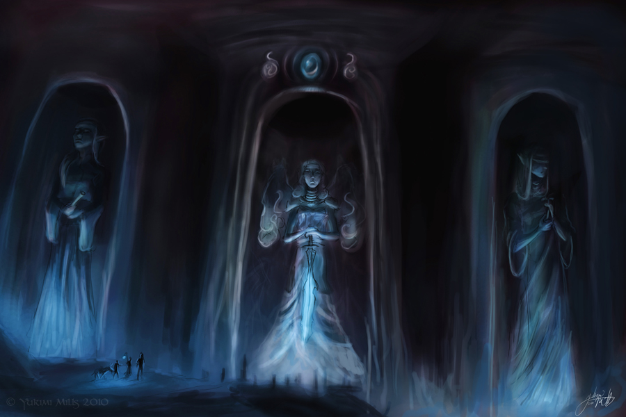

Collin Giometti
ART/ARCHITECTURE |
|  |
|
In the center of the empire hung from the cavern ceiling, in the sight of millions of awestruck people, lied palatia fundatorum, or the palace of the founders. Constructed with spiritium, gold, and vast precious metals, it was the mount olympus of Luxantrum. Notably, this was the home of the council, and the reason for their divine reputation and legitimacy in the eyes of the people. Found within the empire were countless statues and shrines containing spritium. Apart from the effects their power had on life around them, they were also places of spiritual significance, and connected people to their empire. |